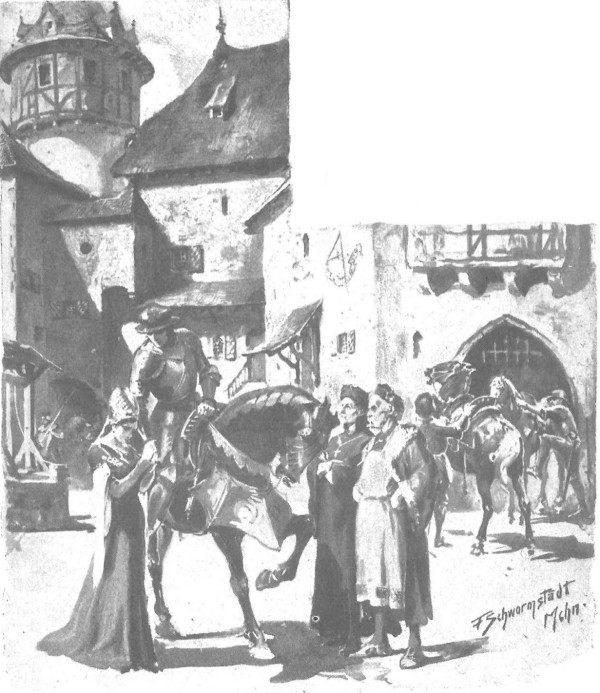

Hôm sau, đến ngày Zbyszko lên đường. Chàng ngồi cao trên lưng con ngựa chiến vạm vỡ, mọi người vây quanh. Jagienka đứng một bên hông ngựa, ngước đôi mắt xanh buồn bã lặng nhìn chàng trai, như muốn ngắm cho thỏa trước lúc chia xa. Ông Maćko cùng với cha Kaleb đứng bên kia, cạnh chàng hộ vệ với Sieciechówna. Zbyszko quay hết bên nọ sang bên kia, trao đổi với mọi người những lời ngắn gọn thường nói trước lúc đi xa: “Khỏe nhé!” - “Cầu Chúa dẫn dắt!” - “Đến giờ rồi!” - “Hey! Đ i nhé! Đi nhé!”. Trước đó, chàng đã từ biệt mọi người, riêng với Jagienka, chàng cúi thật thấp cảm ơn vì lòng tốt của cô. Giờ đây, từ yên ngựa cao, chàng những muốn nói thêm với cô một lời tốt đẹp, bởi ánh mắt đang ngước lên và vẻ mặt cô như đang nói với chàng: “Hãy trở về, anh nhé!”, khiến trái tim chàng tràn ngập lòng biết ơn.
Và như thể đáp lại sự gửi gắm không lời của cô, chàng nói:
- Jaguś, em như em gái ruột thịt của anh… Em biết không!… Không phải nói gì thêm nữa!
- Em biết. Chúa phù hộ anh.
- Em nhớ chăm nom chú nhé.
- Anh cũng nhớ nhé.
- Hẳn rồi, anh sẽ về nếu không chết.
- Anh đừng chết!

Hôm sau đến ngày Zbyszko lên đường
Lần trước, ở thành Plock, khi chàng nói chuyện ra đi, cô cũng đã nói với chàng: “Anh đừng chết”, nhưng lần này, những lời ấy phát ra từ tận đáy lòng, và cô cúi gục đầu như để giấu đi những giọt nước mắt, khiến trong một thoáng trán cô khẽ chạm vào đầu gối Zbyszko.
Trong khi đó những kỵ sĩ ở cổng giữ những con ngựa thồ đã sẵn sàng lên đường, bắt đầu cất tiếng hát:
♫ Chiếc nhẫn, chiếc nhẫn vàng sẽ không bị mất. ♫
♫ Nó sẽ không bị rơi mất. ♫
♫ Từ cánh đồng quạ sẽ mang nhẫn về ♫
♫ Trao cho nàng thanh nữ. ♫
- Lên đường! - Zbyszko hét lên.
- Lên đường.
- Chúa sẽ dẫn dắt! Đức Mẹ Tối Linh!…
Tiếng vó ngựa gõ nhịp dập dồn trên cây cầu gỗ bắc ngang con hào, một con ngựa hí dài, những con khác cũng lên tiếng và cả toán người ngựa lên đường.
Nhưng cả Jagienka, ông Maćko, linh mục, cụ Tolima, chàng Séc cùng với nàng thanh nữ và các gia nhân ở lại trang Spychow vẫn đứng trên cầu nhìn mãi theo bóng những người ra đi. Cha Kaleb giơ thánh giá làm dấu cầu nguyện cho họ một hồi lâu, cho đến khi họ khuất dạng sau những khóm cây trần cao vút, cha mới nói:
- Dấu thánh sẽ không cho điều dữ phạm đến họ.
Còn ông Maćko nói thêm:
- Hẳn rồi, mà đàn ngựa khịt mũi rất mạnh cũng là điềm tốt.
Họ cũng không lưu lại Spychow lâu. Sau hai tuần, lão hiệp sĩ đã thu xếp xong mọi chuyện với chàng Séc, người sẽ ở lại trông nom điền sản nơi đây, còn ông cùng Jagienka dẫn một đoàn dài xe ngựa với đám gia nhân có vũ trang lên đường về trang Bogdaniec. Linh mục Kaleb và cụ Tolima không mấy vui khi nhìn đoàn xe, bởi thật ra, ông Maćko đã vơ mất của Spychow một số thứ, nhưng vì Zbyszko đã giao toàn quyền cho ông, nên không ai dám cưỡng. Thậm chí, nếu không bị Jagienka cản bớt, ông còn lấy đi nhiều hơn, và dẫu thường cãi với cô, kêu rên cô là “đầu óc đàn bà”, nhưng hầu hết mọi chuyện ông vẫn nghe theo ý cô.
Họ không mang theo quan tài của Danusia, vì Spychow không bị bán, và Zbyszko muốn nàng được ở lại với cha mình.
Thay vào đó, họ mang đi nhiều tiền bạc và của cải, phần lớn cướp được của bọn Đức trong vô số trận chiến mà ông Jurand đã đánh nhau với chúng. Và giờ đây, khi ngắm những chiếc xe chở đầy được phủ kín bạt, ông Maćko khấp khởi trong tâm khi nghĩ về việc Bogdaniec sẽ được củng cố để hùng mạnh thêm lên. Niềm vui ấy bị đầu độc bởi nỗi sợ Zbyszko có thể mất mạng, nhưng vốn hiểu kỹ năng hiệp sĩ của chàng trai, ông không mất hy vọng rằng chàng sẽ may mắn trở về, và ông khoan khoái nghĩ đến khoảnh khắc ấy.
- Có lẽ đó là ý Chúa, - ông tự nhủ - là trước tiên Zbyszko có được Spychow, tiếp theo có thể là cả Moczydoly và mọi thứ mà cha tu viện trưởng để lại? Cứ để nó trở về đã, mình sẽ dựng cho nó cả một tiểu lâu đài ra dáng ở Bogdaniec, và sau đó cứ để xem!…
Tới đây, ông chợt nghĩ rằng gã Cztan trang Rogowo và Wilk trang Brzozowa chắc hẳn sẽ chẳng mấy vui khi gặp ông, có thể sẽ phải giao đấu với chúng, nhưng ông không lo, giống như một con chiến mã già không nề hà khi lâm trận. Sức khỏe của ông đã hồi phục, ông cảm thấy sức mạnh trong xương cốt và hiểu rằng sẽ dễ dàng hạ được bọn kẻ cướp đó bởi chúng tuy to xác nhưng không được trui rèn kiểu hiệp sĩ. Trước đây, quả tình có lần ông nói với Zbyszko theo kiểu khác, nhưng chẳng qua chỉ để thuyết phục chàng trở về.
“Hey! Mình như cá măng, chúng chỉ là đồ cá mương,” ông nghĩ bụng, “chớ hòng qua mặt mình!” Trái lại, ông băn khoăn một chuyện khác: có Chúa mới biết khi nào Zbyszko trở về, mà chàng lại coi Jagienka như em gái, nhỡ con bé cũng coi Zbyszko như anh trai, không muốn chờ chàng vì ngày về không hẹn thì sao?
Vì vậy, ông quay sang cô và bảo:
- Nghe này, Janga, bác không nói về Cztan và Wilk, đó là bọn nông phu thô thiển, không xứng với cháu. Bây giờ cháu là người của cung đình rồi!… Nhưng rồi năm tháng sẽ qua mau!… Ông Zych quá cố có nói rằng cháu cảm nhận được ý Chúa, nhưng đó là mấy năm trước… Mà bác cũng không biết nữa! Người ta hay nói là nếu thấy vòng hoa đội đầu quá chật, trinh nữ sẽ tìm ngay người giải thoát… Hẳn đó không phải Cztan hay Wilk… Mà cháu nghĩ sao về chuyện đó?
- Bác hỏi về chuyện gì ạ?
- Cháu sẽ không lấy ai sao?
- Cháu à?… Cháu sẽ đi tu.
- Đừng nói vớ vẩn! Thế Zbyszko quay về thì sao?
Cô vẫn lắc đầu:
- Cháu vẫn đi tu.
- Thế nếu nó yêu cháu? Nếu nó hết sức cầu xin cháu?
Cô gái ngoảnh khuôn mặt đỏ bừng ra cánh đồng, vừa lúc cơn gió đồng thổi lại mang đến tai ông Maćko câu trả lời rất khẽ:
- Thì cháu sẽ ở lại.